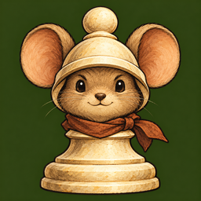

Mouse Pawn, from tab to home screen
These are direct reductions of option B, with no retouching. Each small image is displayed at its labelled size in CSS pixels. Keep browser zoom at 100% for comparison; physical pixels depend on your screen.
Favicon sizes · light background
 16 × 16
16 × 16 24 × 24
24 × 24 32 × 32
32 × 32 48 × 48
48 × 48 64 × 64
64 × 64Favicon sizes · dark background
16 × 16 24 × 24 32 × 32 48 × 48 64 × 64 App-icon previews
Rounded corners below are a visual approximation for comparison, not an iOS system rendering. The saved PNGs have square corners.
 60 × 60 displayed
60 × 60 displayed120 × 120 displayed
180 × 180 displayed 
256 × 256 displayedLarge source exports
512 × 512 PNG · 1024 × 1024 PNG
At 16 pixels, ears and helmet carry the identity; whiskers and painted detail blend away. The owner selected this original artwork for all sizes.